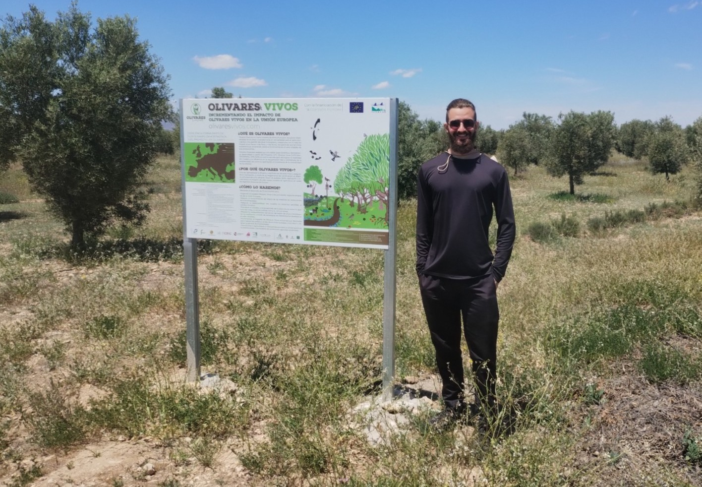
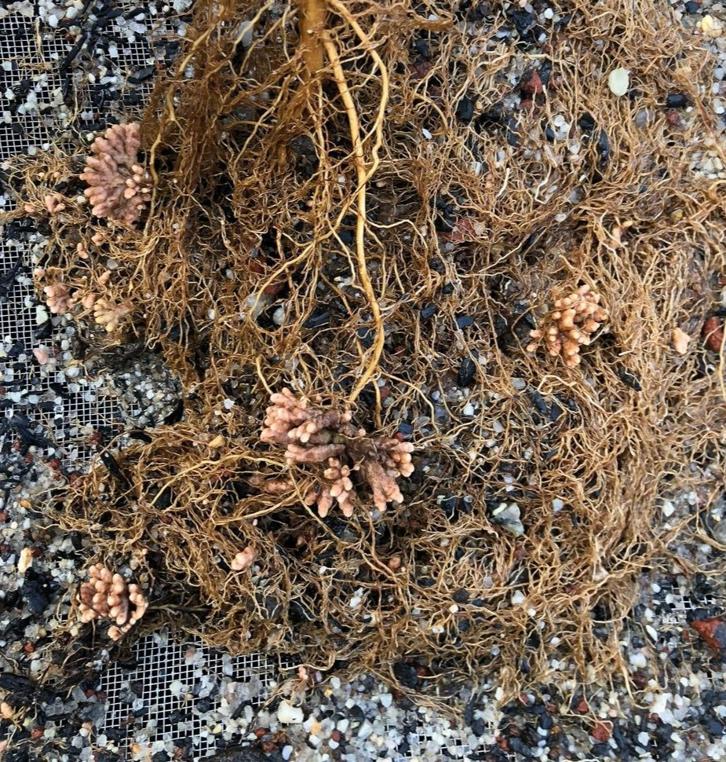
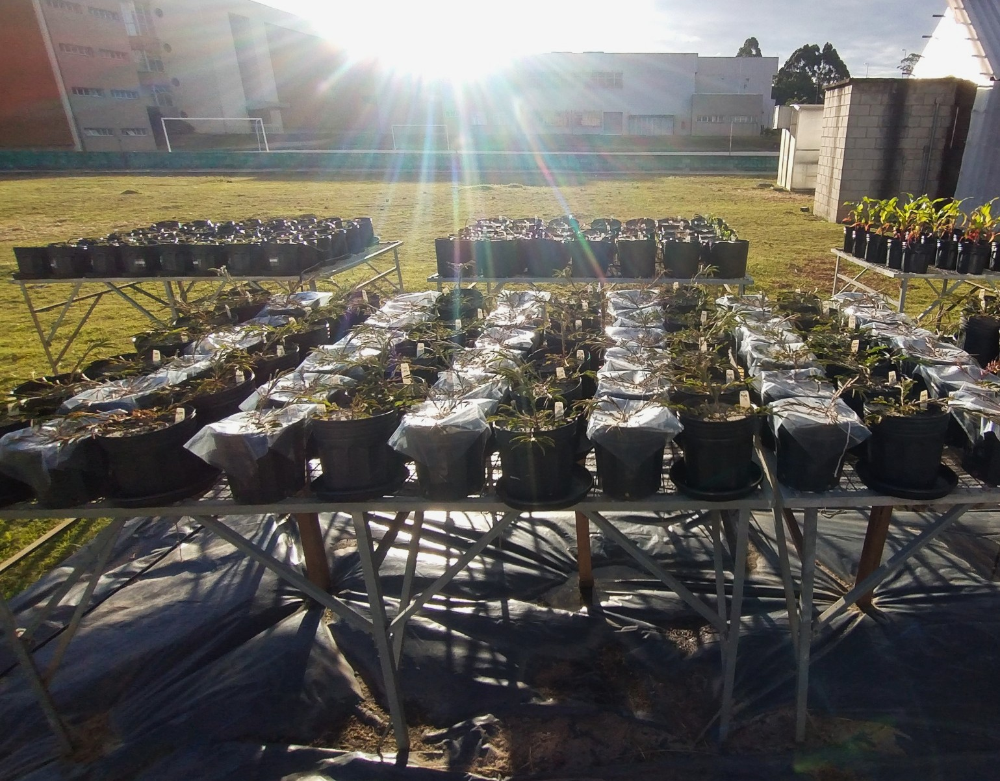

Lucas Bartsch
Mestrado pelo Programa de Evolução e Diversidade — Universidade Federal do ABC (UFABC)
- Ecofisiologia vegetal
- Mutualismo planta-bactéria
- Estresse hídrico
Sobre
Seu projeto explorou como a restrição hídrica pode afetar o mutualismo entre plantas e bactérias fixadoras de nitrogênio. Essa interação é essencial para o suprimento de nitrogênio da planta, mas sua manutenção depende da disponibilidade de carbono no corpo vegetal — recurso que pode ser comprometido pela redução da fotossíntese sob estresse hídrico. Os resultados mostraram que, apesar da redução na assimilação de carbono e nos estoques de carboidratos, a biomassa dos nódulos que abrigam as bactérias fixadoras diminuiu proporcionalmente à biomassa das plantas, indicando que o investimento relativo na nodulação foi mantido mesmo sob estresse.
Graduado em Ciências Biológicas pela Universidade Federal de São Paulo (UNIFESP) e mestre em Evolução e Diversidade pela UFABC (2026). Seus interesses de pesquisa estão nas áreas de ecofisiologia vegetal e ecologia de mutualismos, com foco em como o mutualismo de proteção planta-formiga e o mutualismo de nutrição planta-bactéria fixadora de nitrogênio respondem a fatores ambientais como sombreamento e restrição hídrica.



